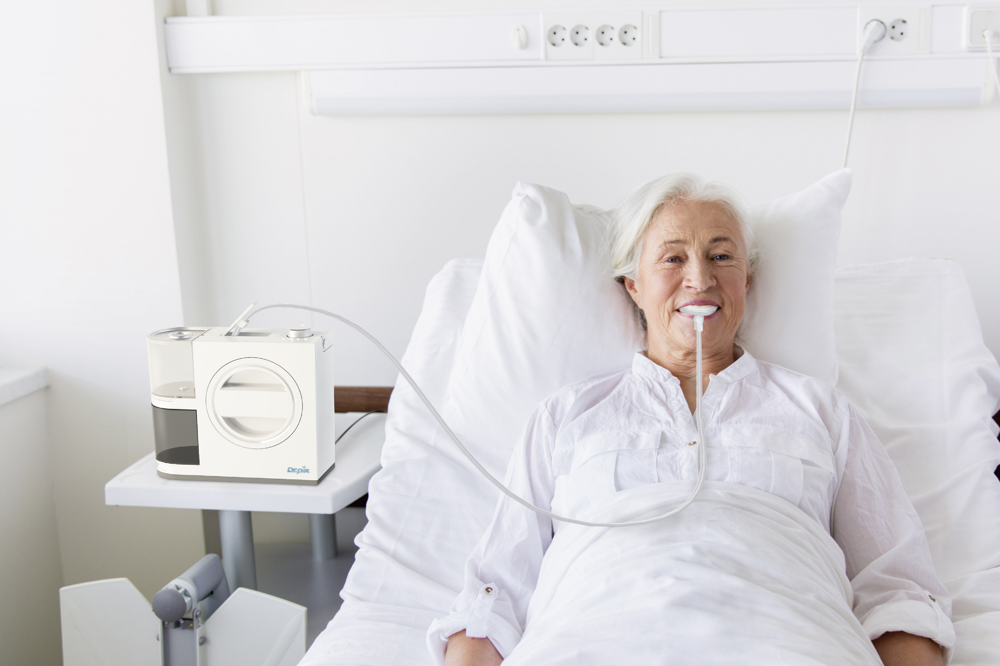
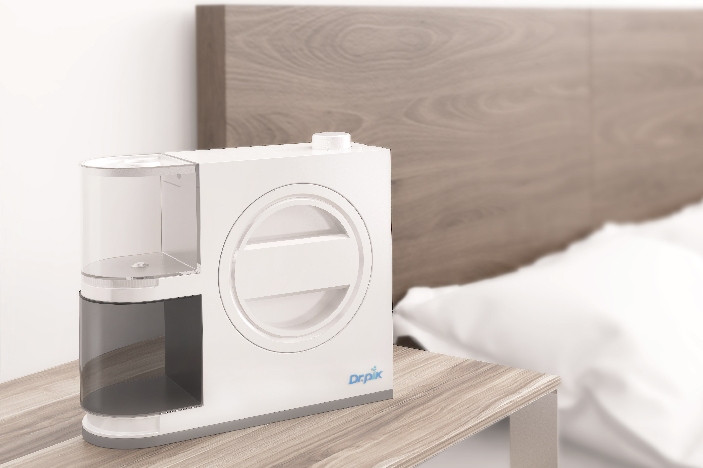
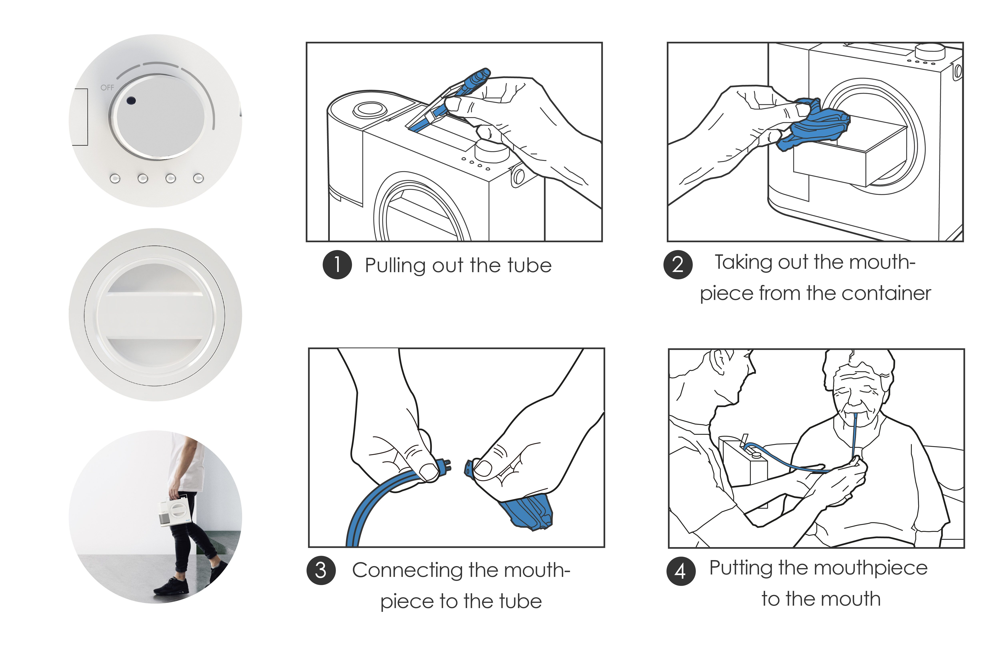
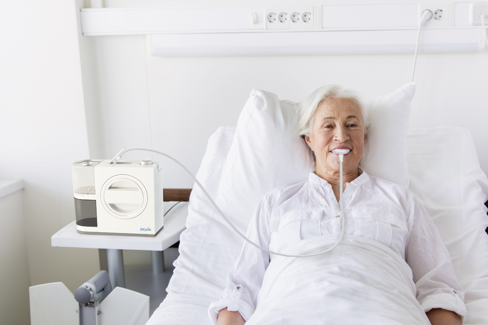
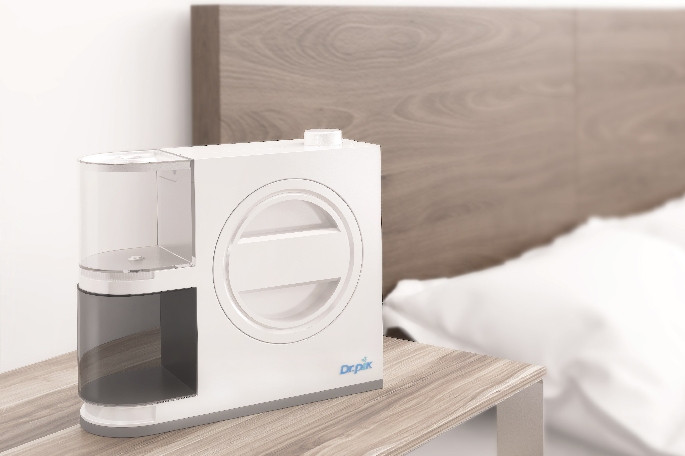
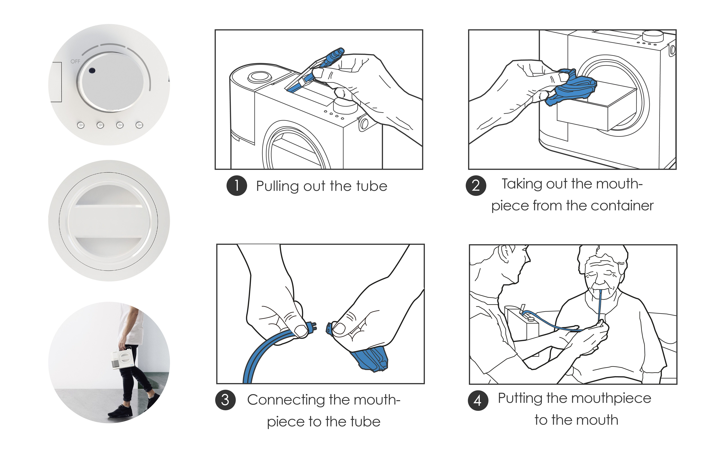

Dr.Pik — Portable Oral Care
Mouthpiece-type portable oral care device integrating water jet + suction. Enables full oral care anywhere without sink access.
Overview
Dr.Pik is a newly developed oral healthcare device to remove plaque and food debris between teeth in an innovative way. Dr.Pik has a silicon mouth-piece connected to water flow tubes from the body of the pro- duct. While teeth become airtight with the mouthpiece teeth are cleaned up by high pressure water coming in and taking plague and food debris out of the mouthpiece.
Process
기존 워터픽 사용 문제 분석 → valve & suction 경로 구조화 → mouthpiece UX prototyping → 사용자 테스트(실험군/대조군) → CMF 및 폼 설계.
Details
Gallery
 




